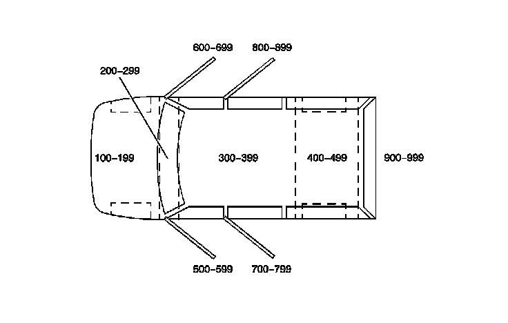
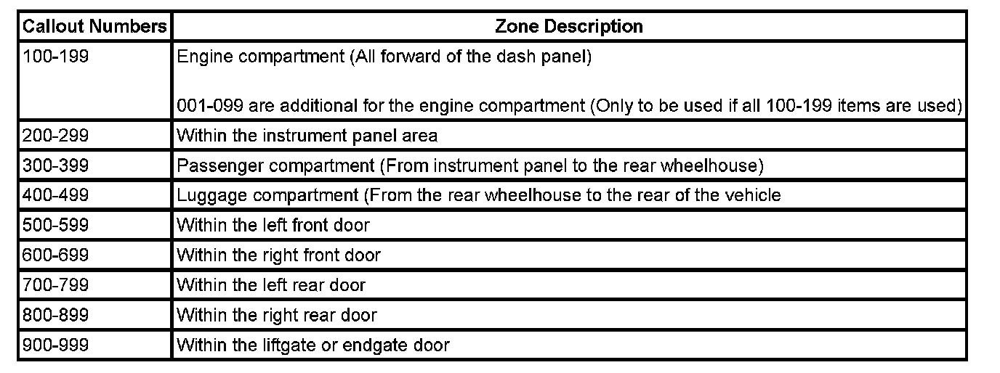

Operation CHARM
: Car repair manuals for everyone.
Home
>>
Cadillac
>>
2007
>>
Escalade ESV AWD V8-6.2L
>>
Repair and Diagnosis
>>
Powertrain Management
>>
Sensors and Switches - Powertrain Management
>>
Sensors and Switches - Computers and Control Systems
>>
Air Flow Meter/Sensor
>>
Diagrams
>>
Diagram Information and Instructions
>>
Utility/Van Zoning
Utility/Van Zoning
UTILITY/VAN ZONING


All grounds, in-line connectors, pass-through grommets, and splices have identifying numbers that correspond to where they are located in the vehicle. The table explains the numbering system.